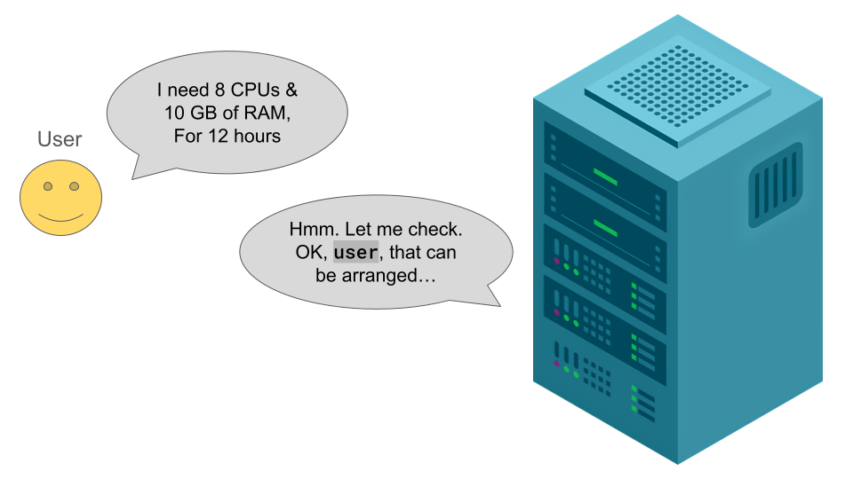
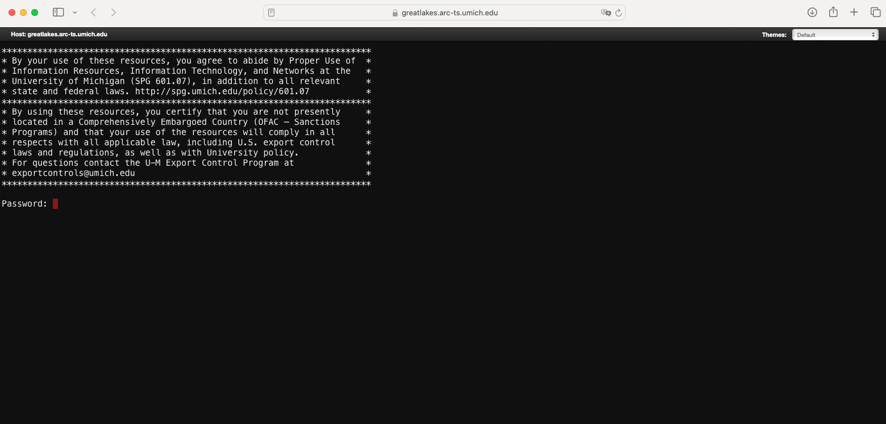
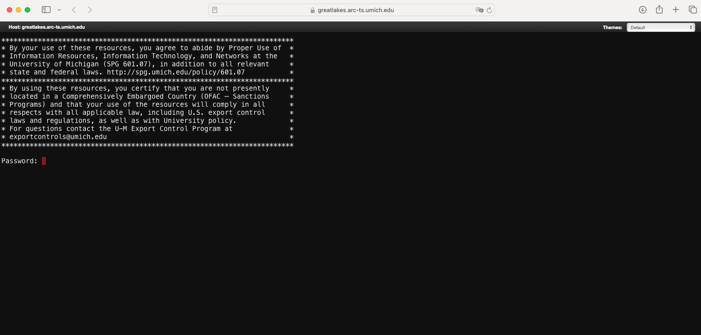
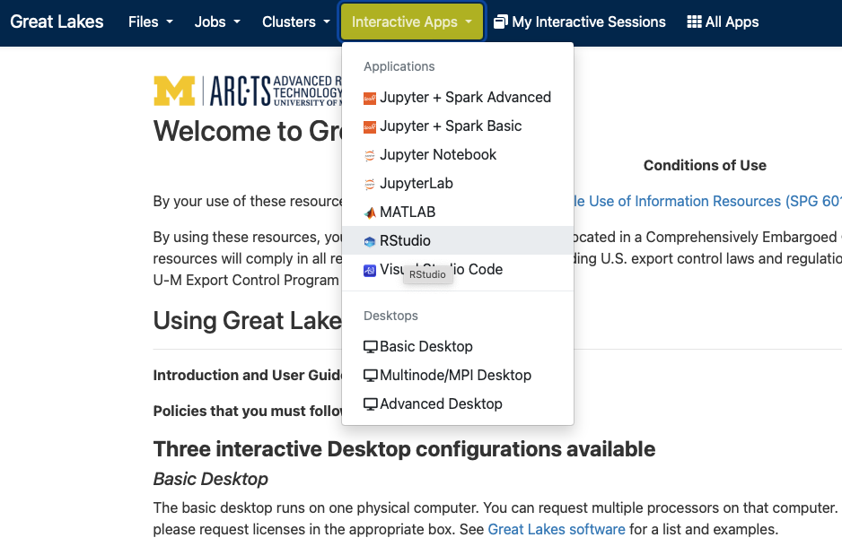
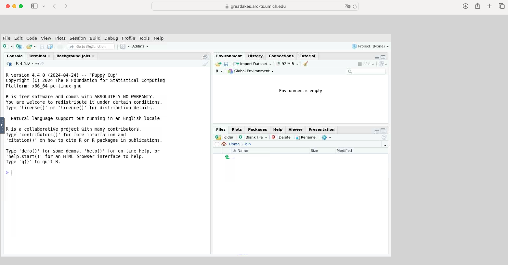
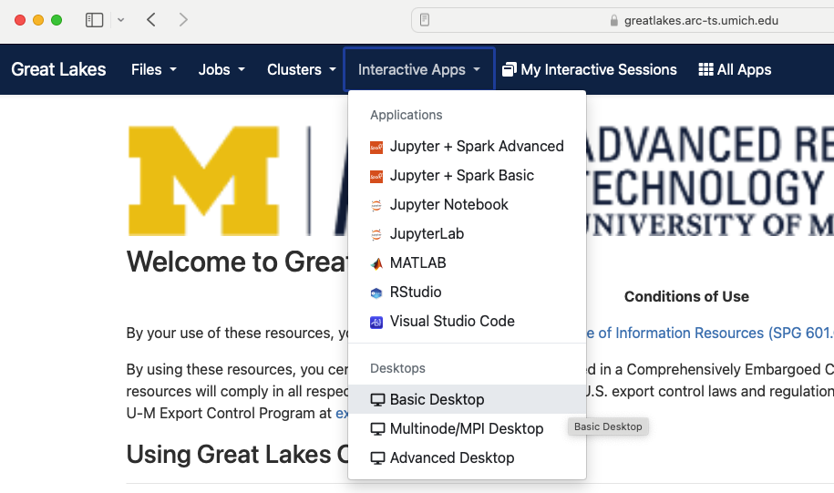

In this module, we will:
- discuss why we must request compute resources for most analysis
tasks
- introduce several additional ways of interacting with the Great
Lakes HPC cluster
- use the web-based file browser for Great Lakes
- use the OpenOnDemand service to launch a web-based interactive
job
Great Lakes - Sneak Peek
So far, we’ve briefly described Great Lakes as a general-purpose
High-Performance Compute (HPC) cluster.
In this module we’ll start to get a feel for what it’s like to use an
HPC cluster. It’s not intended to be a deep dive, but rather to
demonstrate/preview some of the quickest ways to get started in order to
start gaining experience with this system.
Using an HPC Cluster - Must Request Resources

When using an HPC cluster, there is a pattern that is quite different
from our typical interactions with a computer system - we must ask for
resources before we are able to use them. This is a characteristic of a
shared, large, multi-user system like Great Lakes. Within the entirety
of the system, we have an enormous amount of computing power, but at the
same time, we need to allow equal access to this resource to the whole
university. Therefore, we use this pattern of requesting resources and
receiving them before we begin our computing tasks.
Several ways to access Great Lakes
- For compute access:
- Secure Shell (ssh)
- Web-based shell
- OpenOnDemand interactive apps (e.g. RStudio, Basic Desktop)
- For file access:
- Web-based file browser
- Globus
- Direct (it’s directly connected to Great Lakes)
- Remote mount (it can be network-connected to your workstation)
scp, rsync, etc.
Using the web-based access methods
The web-based tools that provide access to Great Lakes and other ARC
resources are a quick and easy way to get started. We’ll use these in
our upcoming exercises to make our first foray into using the Great
Lakes HPC. Additionally, the ‘Interactive Apps’ with ARC’s Open On
Demand service offer a unique solution for when we need to run graphical
applications. We’ll preview this and give some practical tips for using
the RStudio and the Basic Desktop apps.
Sneak preview of the web-based file browser 

Sneak preview of the web-based shell  

Sneak preview of a web-based RStudio session  
Sneak preview of a web-based Basic Desktop session  
Handy links for Great Lakes
Exercise - View Transferred Files
Following along with the instructor, we’ll use the web-based file
browser to review the files from the hello_alcott.sh warmup exercise
Exercise - Launch an RStudio Instance on OpenOnDemand
Following along with the instructor, we’ll use OpenOnDemand to launch
an RStudio instance. Once there, we’ll run a basic R script as a quick
demonstration of these capabilities.
Review
- Discussed the importance of requesting resources
- Learned about additional ways of accessing the Great Lakes HPC
cluster
- Gained familiarity and experience with some of the the web-based
access methods
LS0tCnRpdGxlOiAiU25lYWsgUGVlayBvZiBHcmVhdCBMYWtlcyIKYXV0aG9yOiAiVU0gQmlvaW5mb3JtYXRpY3MgQ29yZSIKb3V0cHV0OgogICAgICAgIGh0bWxfZG9jdW1lbnQ6CiAgICAgICAgICAgIGluY2x1ZGVzOgogICAgICAgICAgICAgICAgaW5faGVhZGVyOiBoZWFkZXIuaHRtbAogICAgICAgICAgICB0aGVtZTogcGFwZXIKICAgICAgICAgICAgbnVtYmVyX3NlY3Rpb25zOiBmYWxzZQogICAgICAgICAgICBmaWdfY2FwdGlvbjogdHJ1ZQogICAgICAgICAgICBtYXJrZG93bjogR0ZNCiAgICAgICAgICAgIGNvZGVfZG93bmxvYWQ6IHRydWUKLS0tCjxzdHlsZSB0eXBlPSJ0ZXh0L2NzcyI+CmJvZHl7IC8qIE5vcm1hbCAgKi8KICAgICAgZm9udC1zaXplOiAxNHB0OwogIH0KcHJlIHsKICBmb250LXNpemU6IDEycHQKfQo8L3N0eWxlPgoKSW4gdGhpcyBtb2R1bGUsIHdlIHdpbGw6CgoqIGRpc2N1c3Mgd2h5IHdlIG11c3QgcmVxdWVzdCBjb21wdXRlIHJlc291cmNlcyBmb3IgbW9zdCBhbmFseXNpcyB0YXNrcwoqIGludHJvZHVjZSBzZXZlcmFsIGFkZGl0aW9uYWwgd2F5cyBvZiBpbnRlcmFjdGluZyB3aXRoIHRoZSBHcmVhdCBMYWtlcyBIUEMgY2x1c3RlcgoqIHVzZSB0aGUgd2ViLWJhc2VkIGZpbGUgYnJvd3NlciBmb3IgR3JlYXQgTGFrZXMKKiB1c2UgdGhlIE9wZW5PbkRlbWFuZCBzZXJ2aWNlIHRvIGxhdW5jaCBhIHdlYi1iYXNlZCBpbnRlcmFjdGl2ZSBqb2IKCjxicj4KCiMjIEdyZWF0IExha2VzIC0gU25lYWsgUGVlawoKU28gZmFyLCB3ZSd2ZSBicmllZmx5IGRlc2NyaWJlZCBHcmVhdCBMYWtlcyBhcyBhIGdlbmVyYWwtcHVycG9zZSBIaWdoLVBlcmZvcm1hbmNlIENvbXB1dGUgKEhQQykgY2x1c3Rlci4gCgpJbiB0aGlzIG1vZHVsZSB3ZSdsbCBzdGFydCB0byBnZXQgYSBmZWVsIGZvciB3aGF0IGl0J3MgbGlrZSB0byB1c2UgYW4gSFBDIGNsdXN0ZXIuIEl0J3Mgbm90IGludGVuZGVkIHRvIGJlIGEgZGVlcCBkaXZlLCBidXQgcmF0aGVyIHRvIGRlbW9uc3RyYXRlL3ByZXZpZXcgc29tZSBvZiB0aGUgcXVpY2tlc3Qgd2F5cyB0byBnZXQgc3RhcnRlZCBpbiBvcmRlciB0byBzdGFydCBnYWluaW5nIGV4cGVyaWVuY2Ugd2l0aCB0aGlzIHN5c3RlbS4KCiMjIyBVc2luZyBhbiBIUEMgQ2x1c3RlciAtIE11c3QgUmVxdWVzdCBSZXNvdXJjZXMKCiFbXShpbWFnZXMvTW9kdWxlMDNhX2Fza19mb3JfcmVzb3VyY2VzLnBuZykKCldoZW4gdXNpbmcgYW4gSFBDIGNsdXN0ZXIsIHRoZXJlIGlzIGEgcGF0dGVybiB0aGF0IGlzIHF1aXRlIGRpZmZlcmVudCBmcm9tIG91ciB0eXBpY2FsIGludGVyYWN0aW9ucyB3aXRoIGEgY29tcHV0ZXIgc3lzdGVtIC0gd2UgbXVzdCBhc2sgZm9yIHJlc291cmNlcyBiZWZvcmUgd2UgYXJlIGFibGUgdG8gdXNlIHRoZW0uIFRoaXMgaXMgYSBjaGFyYWN0ZXJpc3RpYyBvZiBhIHNoYXJlZCwgbGFyZ2UsIG11bHRpLXVzZXIgc3lzdGVtIGxpa2UgR3JlYXQgTGFrZXMuIFdpdGhpbiB0aGUgZW50aXJldHkgb2YgdGhlIHN5c3RlbSwgd2UgaGF2ZSBhbiBlbm9ybW91cyBhbW91bnQgb2YgY29tcHV0aW5nIHBvd2VyLCBidXQgYXQgdGhlIHNhbWUgdGltZSwgd2UgbmVlZCB0byBhbGxvdyBlcXVhbCBhY2Nlc3MgdG8gdGhpcyByZXNvdXJjZSB0byB0aGUgd2hvbGUgdW5pdmVyc2l0eS4gVGhlcmVmb3JlLCB3ZSB1c2UgdGhpcyBwYXR0ZXJuIG9mIHJlcXVlc3RpbmcgcmVzb3VyY2VzIGFuZCByZWNlaXZpbmcgdGhlbSBiZWZvcmUgd2UgYmVnaW4gb3VyIGNvbXB1dGluZyB0YXNrcy4KCiMjIyBTZXZlcmFsIHdheXMgdG8gYWNjZXNzIEdyZWF0IExha2VzCgotIEZvciBjb21wdXRlIGFjY2VzczoKICAgIC0gU2VjdXJlIFNoZWxsIChzc2gpCiAgICAtIFdlYi1iYXNlZCBzaGVsbAogICAgLSBPcGVuT25EZW1hbmQgaW50ZXJhY3RpdmUgYXBwcyAoZS5nLiBSU3R1ZGlvLCBCYXNpYyBEZXNrdG9wKQotIEZvciBmaWxlIGFjY2VzczoKICAgIC0gV2ViLWJhc2VkIGZpbGUgYnJvd3NlcgogICAgLSBHbG9idXMKICAgIC0gRGlyZWN0IChpdCdzIGRpcmVjdGx5IGNvbm5lY3RlZCB0byBHcmVhdCBMYWtlcykKICAgIC0gUmVtb3RlIG1vdW50IChpdCBjYW4gYmUgbmV0d29yay1jb25uZWN0ZWQgdG8geW91ciB3b3Jrc3RhdGlvbikKICAgIC0gYHNjcGAsIGByc3luY2AsIGV0Yy4KCiMjIyBVc2luZyB0aGUgd2ViLWJhc2VkIGFjY2VzcyBtZXRob2RzCgpUaGUgd2ViLWJhc2VkIHRvb2xzIHRoYXQgcHJvdmlkZSBhY2Nlc3MgdG8gR3JlYXQgTGFrZXMgYW5kIG90aGVyIEFSQyByZXNvdXJjZXMgYXJlIGEgcXVpY2sgYW5kIGVhc3kgd2F5IHRvIGdldCBzdGFydGVkLiBXZSdsbCB1c2UgdGhlc2UgaW4gb3VyIHVwY29taW5nIGV4ZXJjaXNlcyB0byBtYWtlIG91ciBmaXJzdCBmb3JheSBpbnRvIHVzaW5nIHRoZSBHcmVhdCBMYWtlcyBIUEMuIEFkZGl0aW9uYWxseSwgdGhlICdJbnRlcmFjdGl2ZSBBcHBzJyB3aXRoIEFSQydzIE9wZW4gT24gRGVtYW5kIHNlcnZpY2Ugb2ZmZXIgYSB1bmlxdWUgc29sdXRpb24gZm9yIHdoZW4gd2UgbmVlZCB0byBydW4gZ3JhcGhpY2FsIGFwcGxpY2F0aW9ucy4gV2UnbGwgcHJldmlldyB0aGlzIGFuZCBnaXZlIHNvbWUgcHJhY3RpY2FsIHRpcHMgZm9yIHVzaW5nIHRoZSBSU3R1ZGlvIGFuZCB0aGUgQmFzaWMgRGVza3RvcCBhcHBzLgoKPGJyPgoKU25lYWsgcHJldmlldyBvZiB0aGUgd2ViLWJhc2VkIGZpbGUgYnJvd3NlcgohW10oaW1hZ2VzL01vZHVsZTAzYV9hY2Nlc3Npbmdfd2ViX2Jhc2VkX2ZpbGVfYnJvd3Nlci5wbmcpCiFbXShpbWFnZXMvTW9kdWxlMDNhX3ByZXZpZXdfd2ViX2Jhc2VkX2ZpbGVfYnJvd3Nlci5wbmcpCgo8YnI+CgpTbmVhayBwcmV2aWV3IG9mIHRoZSB3ZWItYmFzZWQgc2hlbGwKIVtdKGltYWdlcy9Nb2R1bGUwM2FfYWNjZXNzaW5nX3dlYl9iYXNlZF9zaGVsbC5wbmcpCiFbXShpbWFnZXMvTW9kdWxlMDNhX3ByZXZpZXdfd2ViX2Jhc2VkX3NoZWxsLnBuZykKCjxicj4KClNuZWFrIHByZXZpZXcgb2YgYSB3ZWItYmFzZWQgUlN0dWRpbyBzZXNzaW9uCiFbXShpbWFnZXMvTW9kdWxlMDNhX2FjY2Vzc2luZ19pbnRlcmFjdGl2ZV9yc3R1ZGlvLnBuZykKIVtdKGltYWdlcy9Nb2R1bGUwM2FfcHJldmlld19pbnRlcmFjdGl2ZV9yc3R1ZGlvLnBuZykKCjxicj4KClNuZWFrIHByZXZpZXcgb2YgYSB3ZWItYmFzZWQgQmFzaWMgRGVza3RvcCBzZXNzaW9uCiFbXShpbWFnZXMvTW9kdWxlMDNhX2FjY2Vzc2luZ19pbnRlcmFjdGl2ZV9iYXNpY19kZXNrdG9wLnBuZykKIVtdKGltYWdlcy9Nb2R1bGUwM2FfcHJldmlld19pbnRlcmFjdGl2ZV9iYXNpY19kZXNrdG9wLnBuZykKCjxicj4KCiMjIEhhbmR5IGxpbmtzIGZvciBHcmVhdCBMYWtlcwoKLSBbTGluayB0byBBUkMncyBHcmVhdCBMYWtlcyBvdmVydmlldyBwYWdlXShodHRwczovL2l0cy51bWljaC5lZHUvYWR2YW5jZWQtcmVzZWFyY2gtY29tcHV0aW5nL2hpZ2gtcGVyZm9ybWFuY2UtY29tcHV0aW5nL2dyZWF0LWxha2VzKQotIFtMaW5rIHRvIEdyZWF0IExha2VzIERhc2hib2FyZF0oaHR0cHM6Ly9ncmVhdGxha2VzLmFyYy10cy51bWljaC5lZHUpCgo8YnI+CgojIyBFeGVyY2lzZSAtIFZpZXcgVHJhbnNmZXJyZWQgRmlsZXMKCkZvbGxvd2luZyBhbG9uZyB3aXRoIHRoZSBpbnN0cnVjdG9yLCB3ZSdsbCB1c2UgdGhlIHdlYi1iYXNlZCBmaWxlIGJyb3dzZXIgdG8gcmV2aWV3IHRoZSBmaWxlcyBmcm9tIHRoZSBoZWxsb19hbGNvdHQuc2ggd2FybXVwIGV4ZXJjaXNlCgojIyBFeGVyY2lzZSAtIExhdW5jaCBhbiBSU3R1ZGlvIEluc3RhbmNlIG9uIE9wZW5PbkRlbWFuZAoKRm9sbG93aW5nIGFsb25nIHdpdGggdGhlIGluc3RydWN0b3IsIHdlJ2xsIHVzZSBPcGVuT25EZW1hbmQgdG8gbGF1bmNoIGFuIFJTdHVkaW8gaW5zdGFuY2UuIE9uY2UgdGhlcmUsIHdlJ2xsIHJ1biBhIGJhc2ljIFIgc2NyaXB0IGFzIGEgcXVpY2sgZGVtb25zdHJhdGlvbiBvZiB0aGVzZSBjYXBhYmlsaXRpZXMuCgojIyBSZXZpZXcKCi0gRGlzY3Vzc2VkIHRoZSBpbXBvcnRhbmNlIG9mIHJlcXVlc3RpbmcgcmVzb3VyY2VzCi0gTGVhcm5lZCBhYm91dCBhZGRpdGlvbmFsIHdheXMgb2YgYWNjZXNzaW5nIHRoZSBHcmVhdCBMYWtlcyBIUEMgY2x1c3RlcgotIEdhaW5lZCBmYW1pbGlhcml0eSBhbmQgZXhwZXJpZW5jZSB3aXRoIHNvbWUgb2YgdGhlIHRoZSB3ZWItYmFzZWQgYWNjZXNzIG1ldGhvZHMKCjxicj4KCiMjIyBIYW5keSBMaW5rcwoKLSBbTGluayB0byBBUkMncyBHcmVhdCBMYWtlcyBvdmVydmlldyBwYWdlIChzYW1lIGFzIGFib3ZlKV0oaHR0cHM6Ly9pdHMudW1pY2guZWR1L2FkdmFuY2VkLXJlc2VhcmNoLWNvbXB1dGluZy9oaWdoLXBlcmZvcm1hbmNlLWNvbXB1dGluZy9ncmVhdC1sYWtlcykKLSBbTGluayB0byBHcmVhdCBMYWtlcyBEYXNoYm9hcmQgKHNhbWUgYXMgYWJvdmUpXShodHRwczovL2dyZWF0bGFrZXMuYXJjLXRzLnVtaWNoLmVkdSkKLSBbbGluayBmcm9tIEFHQyBvbiB2YWxpZGF0aW5nIGZpbGUgaW50ZWdyaXR5IHVzaW5nIG1kNXN1bV0oaHR0cDovL21pY2htZWQub3JnL2FnYy1tZDVzdW0pCgoKfCBbUHJldmlvdXMgbGVzc29uXShNb2R1bGVfb3ZlcnZpZXdfYW5kX3dhcm11cC5odG1sKSB8IFtUb3Agb2YgdGhpcyBsZXNzb25dKCN0b3ApIHwgW05leHQgbGVzc29uXShNb2R1bGVfZGF0YV9wcmlvcml0aWVzX2FuYWx5c2lzX3NldHVwLmh0bWwpIHwKfCA6LS0tIHwgOi0tLS06IHwgLS0tOiB8Cg==